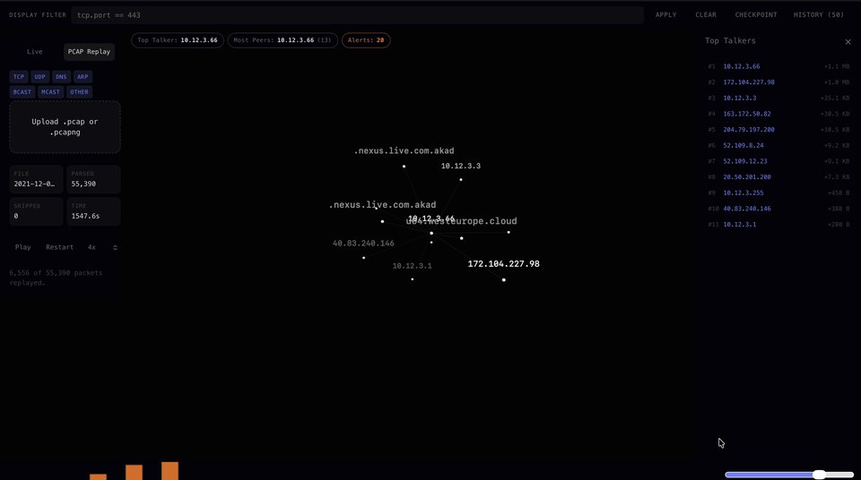

PacMap is a graph-first network traffic visualizer for live capture and PCAP replay that helps investigators see what changed, what is noisy, and where to inspect next. It is designed to make packet-level activity review faster by representing hosts and conversations as an interactive graph and providing checkpoint/diff workflows for comparison, replay, and investigation.

Input modes
PacMap supports two workflows: live capture (inspect traffic on a local interface in real time) and PCAP replay (upload a saved capture and replay packet flow with timeline controls).
Install
From the repository root:
python3 -m venv venv
source venv/bin/activate
pip install websockets scapy
npm install --prefix clientOn Windows, create and activate a venv using your normal Python workflow, then install the same packages. Packet capture on Windows requires Npcap.
Live capture
Start PacMap from the repo root and point it at a local interface:
npm start -- --iface en0Common interface examples:
- macOS Wi‑Fi:
en0 - Linux Ethernet:
eth0 - Linux Wi‑Fi:
wlan0 - Windows: use the Npcap interface name shown by Scapy
Open http://127.0.0.1:5176 in your browser and use the control dock to start capture. Raw capture typically requires elevated privileges; on macOS/Linux run the command under sudo, and on Windows run the terminal as Administrator.
Replay PCAP
Switch the source to PCAP Replay in the web app and upload a .pcap or .pcapng file. Replay provides play/pause, speed control, a timeline scrubber, and label-mode controls. Replay runs entirely in the browser and does not require the Python capture server.
Replay includes investigation panels for conversations, endpoints, protocol breakdowns, name resolution, and an I/O timeline. File limits: 100 MB and 100,000 packets. Unsupported frames are skipped and counted in the UI.
Display filter
Both Live Capture and Replay support a Wireshark-style display filter bar. Enter a filter and press Enter to apply; clear and press Enter to remove it. Supported examples include:
tcp udp dns http arp
ip.addr == 192.168.1.10
ip.src == 10.0.0.1
ip.dst == 8.8.8.8
tcp.port == 443
udp.port == 53
port == 80
ip.src == 10.0.0.1 && ip.dst == 8.8.8.8Compound filters (using &&) narrow the graph to matching nodes and edges; clearing the filter restores the full view for the current capture window.
Path tracing
Providing a compound filter like ip.src == X && ip.dst == Y activates path tracing. PacMap performs a BFS over the capture to find hop chains between endpoints and highlights intermediate nodes in the graph. The hops panel shows per-edge packet and byte counts to aid investigation.
Checkpoints
Checkpoints snapshot the current network state (nodes, edges, volumes) and support manual and automatic capture:
- Manual: Click Checkpoint and provide a label.
- Auto: Configure the control dock to checkpoint on host discovery or other events.
Select two checkpoints to compare — added, removed, and changed nodes/edges are highlighted and listed in a diff panel. Checkpoints persist in localStorage under pacmap_checkpoints (up to 50 entries).
Why a local helper?
Browsers cannot perform privileged packet capture. PacMap uses a local Python WebSocket helper built on Scapy to perform live capture and stream packet summaries to the React UI at ws://127.0.0.1:8765. PCAP replay runs in the browser and does not require the helper.
Development
Frontend only:
cd client
npm install
npm run devProduction build: npm run build
Capture server only:
source venv/bin/activate
python3 server.py --iface en0Troubleshooting
- If the UI shows the capture server offline, confirm
server.pyis running and the WebSocket port is available. - If capture fails, verify the interface name and run with the required privileges.
- If no live nodes appear, generate traffic (browse, ping, or run DNS lookups).
- If many packets are skipped when loading a PCAP, the file may use an unsupported link type or contain encrypted/non‑IP traffic.
Tech
React + Vite · Three.js · Python WebSocket server · Scapy